library(pacman)
p_load(tidyverse, skimr, gridExtra, GGally, corrplot, car)Classification of Penguin Species using Machine Learning Models
Introduction
The fact of Penguins
Exclusively distributed in the Southern Hemisphere
Eighteen species are recognized
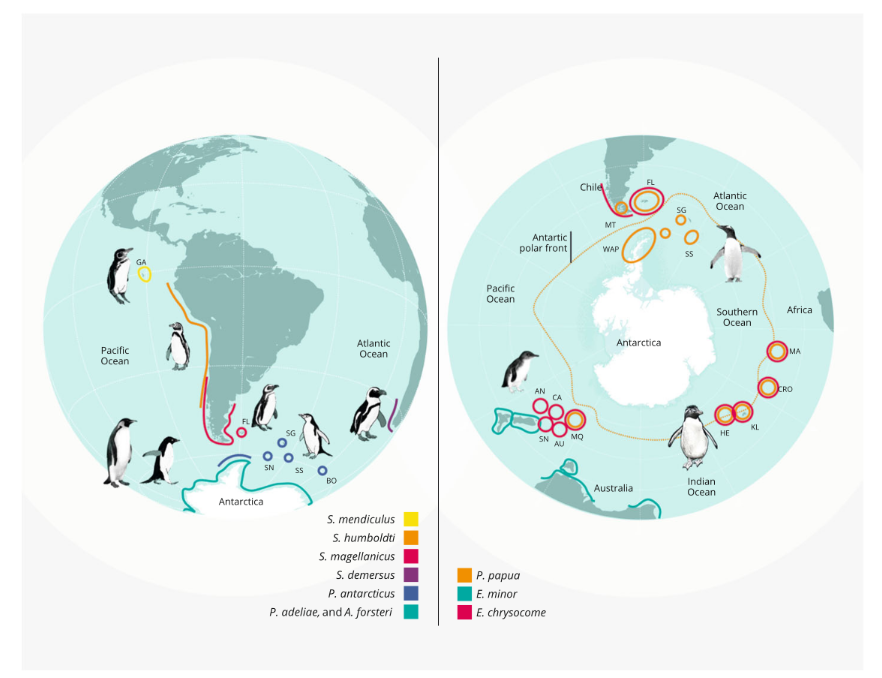
(source: Romos et al. BMC Genomics (2018) 1953, DOI 10.1186/s12864-017-4424-9; https://en.wikipedia.org/wiki/List_of_penguins)
Adelie, Chinstrap and Gentoo penguins
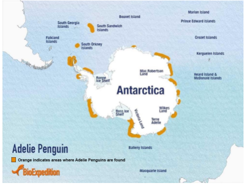
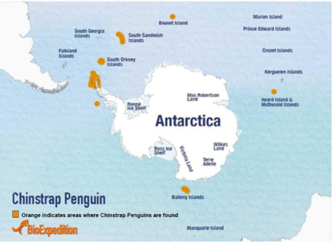
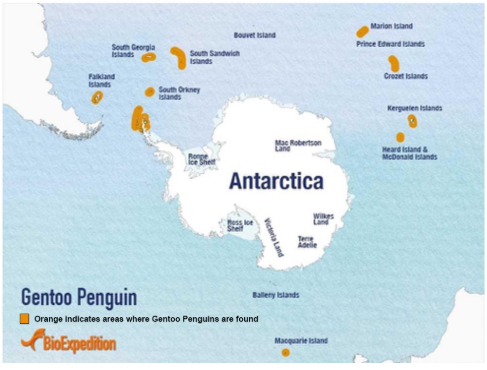
(source: Andrew Shiva/Wikipedia; POLAR LITERACY, https://tinyurl.com/3h4xcr6n)
Purpose of the analysis
Gorman et al. (2014) provide part of their research data on three penguin species, aiming to investigate whether environmental variability is associated with differences in male and female pre-breeding foraging niches. Using this dataset, we examine whether habitat, morphological traits, and other features can help distinguish the species.
Methods
Data
The data were originally collected by Gorman and her collegues (see Gorman KB et al. (2014) PLOS ONE, 9(3): e90081. https://doi.org/10.1371/journal.pone.0090081 ) and were downloaded from Kaggle for the years 2021 to 2025 (https://tinyurl.com/mmy6ds5n). This dataset is already well curated, it contains no missing values, duplicates or null entries.
Data were collected in the three islands: Biscoe, Dream and Torgensen in Antarctica.
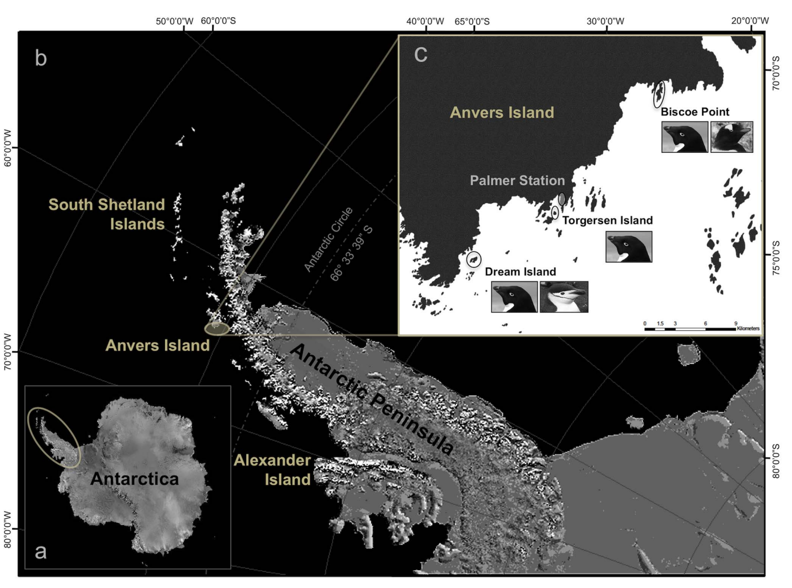 (source: Gorman et al. 2014)
Importing and exploring data
We used the pacman library, which allows installing and loading libraries simultaneously, as an alternative to using install.packages() and library() separately.
df <- read.csv("palmerpenguins_extended.csv")Exploring data
df %>% glimpseRows: 3,430
Columns: 11
$ species <chr> "Adelie", "Adelie", "Adelie", "Adelie", "Adelie", "A…
$ island <chr> "Biscoe", "Biscoe", "Biscoe", "Biscoe", "Biscoe", "B…
$ bill_length_mm <dbl> 53.4, 49.3, 55.7, 38.0, 60.7, 35.7, 61.0, 66.1, 61.4…
$ bill_depth_mm <dbl> 17.8, 18.1, 16.6, 15.6, 17.9, 16.8, 20.8, 20.8, 19.9…
$ flipper_length_mm <dbl> 219, 245, 226, 221, 177, 194, 211, 246, 270, 230, 27…
$ body_mass_g <dbl> 5687, 6811, 5388, 6262, 4811, 5266, 5961, 6653, 6722…
$ sex <chr> "female", "female", "female", "female", "female", "f…
$ diet <chr> "fish", "fish", "fish", "fish", "fish", "fish", "fis…
$ life_stage <chr> "adult", "adult", "adult", "adult", "juvenile", "juv…
$ health_metrics <chr> "overweight", "overweight", "overweight", "overweigh…
$ year <int> 2021, 2021, 2021, 2021, 2021, 2021, 2021, 2021, 2021…The dataset contains both numerical and categorical columns. It has 10 feartuers and 1 target column (it is the species column in this report), and 3,430 records.
skim_s <- skim(df)
print(skim_s)── Data Summary ────────────────────────
Values
Name df
Number of rows 3430
Number of columns 11
_______________________
Column type frequency:
character 6
numeric 5
________________________
Group variables None
── Variable type: character ────────────────────────────────────────────────────
skim_variable n_missing complete_rate min max empty n_unique whitespace
1 species 0 1 6 9 0 3 0
2 island 0 1 5 9 0 3 0
3 sex 0 1 4 6 0 2 0
4 diet 0 1 4 8 0 4 0
5 life_stage 0 1 5 8 0 3 0
6 health_metrics 0 1 7 11 0 3 0
── Variable type: numeric ──────────────────────────────────────────────────────
skim_variable n_missing complete_rate mean sd p0 p25 p50
1 bill_length_mm 0 1 38.5 13.2 13.6 28.9 34.5
2 bill_depth_mm 0 1 18.4 2.77 9.1 16.6 18.4
3 flipper_length_mm 0 1 207. 28.9 140 185 203
4 body_mass_g 0 1 4835. 1311. 2477 3844. 4634.
5 year 0 1 2023. 1.31 2021 2022 2024
p75 p100 hist
1 46.6 88.2 ▃▇▃▂▁
2 20.3 27.9 ▁▃▇▃▁
3 226 308 ▂▇▅▂▁
4 5622 10549 ▆▇▃▁▁
5 2024 2025 ▃▆▆▇▇Target
The target variable is penguin species, consisting of three classes, making this a multiclass classification problem. The dataset is slightly imbalanced, though not enough to require adjustment. Adelie penguins represented in the largest number of records, while Chinstrap penguins have the fewest.
table(df$species)
Adelie Chinstrap Gentoo
1560 623 1247 Numeric data distribution
df$year <- as.factor(df$year)
numeric_df <- df[sapply(df, is.numeric)]
df_num_tar <- data.frame(species = df$species, year = df$year,
numeric_df)df_l <- df_num_tar %>% pivot_longer(cols = 3:6,
names_to = "variables", values_to = "values")
p <- df_l %>% ggplot(aes(x = species, y = values)) + geom_boxplot() +
facet_wrap(~variables, scales = "free_y")
p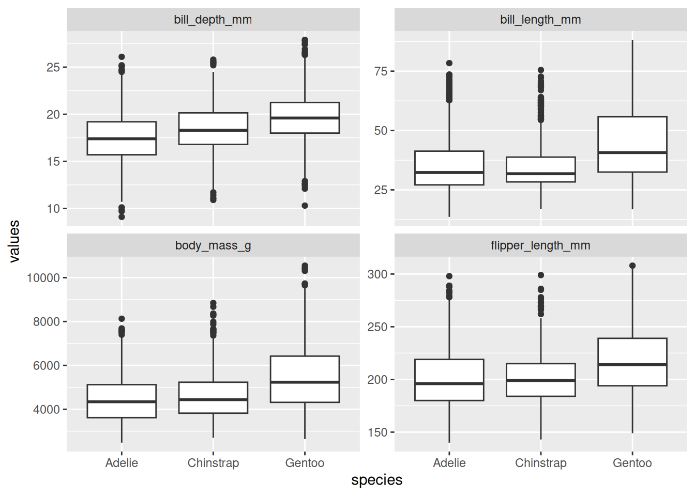
These figures show the outliers in all numerical features, bill depth, bill length, body mass and flipper length. Theoretically such outliers should be removed before applying linear models or distance-based models. However, I decided to keep them for now. If the performance of those models is poor or requires improvements, we will revisit this issue.
That said, data collected through fieldworks in harsh environment are rare, and the outliers often carry valuable ecological information. Therefore, they should not be removed unless these are clearly measurement errors or artificial anomalies.
Categorical data
df_char <- df[sapply(df, function(x) is.character(x) || is.factor(x) )]
df_l <- df_char %>% pivot_longer(cols = 1:7, names_to = "variables", values_to = "values") df_l %>% ggplot(aes(x = factor(values))) + geom_bar() +
facet_wrap(~ variables, scales = "free_y") +
labs(x="", y = "") +
coord_flip() 
The number of individuals differs across the categorical features except for sex. The largest number of measured penguins comes from the Biscoe island.
Species vs Island
p <- df %>% ggplot(aes(island, fill = species)) + geom_bar(position = "stack")
p + labs(x = "Island", y = "The number of Penguins") + theme_minimal(base_size = 14)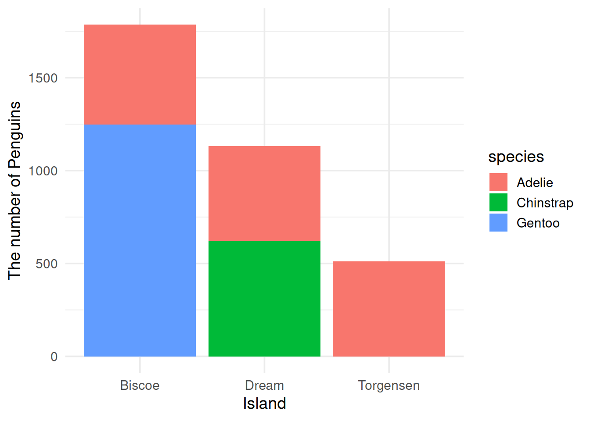
We can observe distinct habitat differences among species. Chinstrap and Gentoo penguins are found mainly on Biscoe and Dream islands, respectively, whereas Adelie penguins inhabit all three islands.
Pair plot of numeric data
cor_mat <- cor(numeric_df[-5], use = "complete.obs")
corrplot(cor_mat,
method = "color",
type = "upper",
addCoef.col = "black",
tl.col = "black",
tl.srt = 40)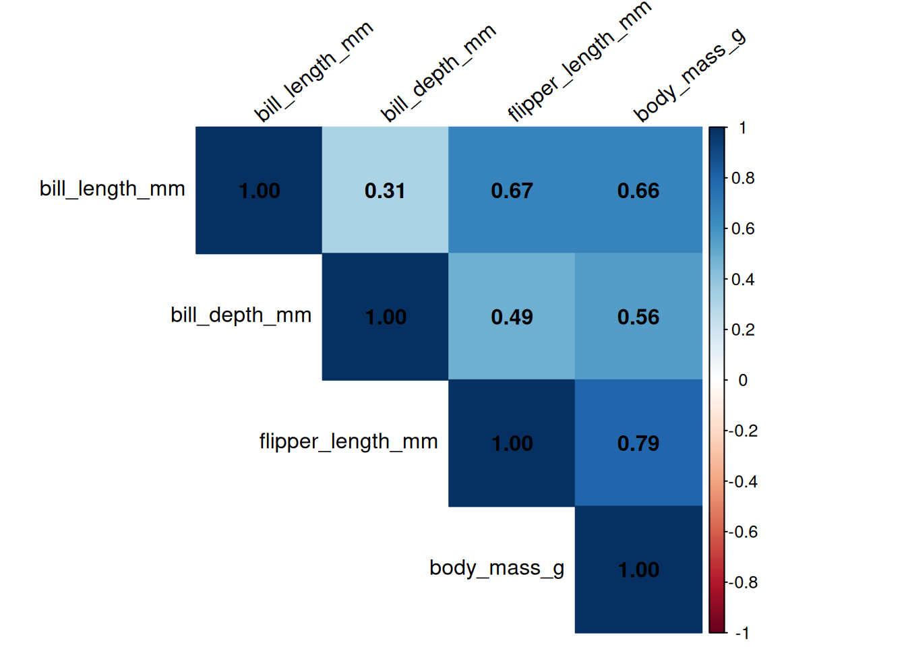
There are clear correlations among morphological variables. In particular, the correlation between body mass and flipper length appears to be high.
model <- lm(body_mass_g ~ bill_length_mm + bill_depth_mm + flipper_length_mm, data = df)
vif(model) bill_length_mm bill_depth_mm flipper_length_mm
1.811190 1.312078 2.142848 However, the VIF values are all below 5, indicating that collinearity is negligible.
The relationship between flipper length and weight
p1 <- df %>% ggplot(aes(x = body_mass_g, y = flipper_length_mm, color = species)) + geom_point() +
labs(x = "Weight (g)", y = "Flipper length (mm)") + theme_minimal(base_size = 14)
p2 <- df %>% ggplot(aes(x = body_mass_g, y = flipper_length_mm, color = sex)) + geom_point() +
labs(x = "Weight (g)", y = "Flipper length (mm)") + theme_minimal(base_size = 14)
grid.arrange(p1, p2, ncol = 2)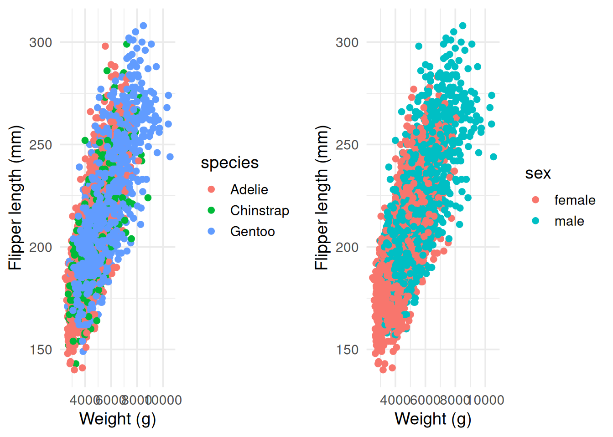
While there is a clear relationship between flipper length and weight, differences between sexes and among species are not easily distinguishable.
Pair plot for numerical data
df01 <- data.frame(species = df$species, numeric_df)
df01 %>% ggpairs(ggplot2::aes(color = species, alpha = 0.4))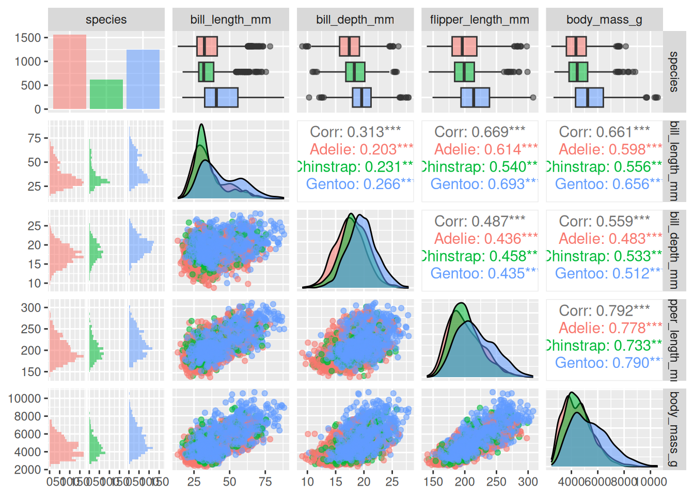
The ggpairs() covers most of preliminary examinations we have done up to this point, making it useful for quickly grasping an overall picture of the data.
Analytical methods
Models
We used the classification models listed below. Except for selecting the value of k in kNN, we did not extensively tune hyperparameters. Our assumption was that if a model is well-suited to the data, it can still perform reasonably well with default settings. Therefore, the hyperparameters used here are essentially the default values, which are typically chosen to be broadly effective. Thus, the performance comparisons presented below are based on these default hyperparameter settings.
Logistic regression models with Losso, Ridge, and Elastic net regularizations
Decision Tree
Naive Bayes
K-Nearest Neighbors (KNN)
Support Vector Machine (SVM) (Linear)
Support Vector Machine (KSVM) (Radial Basis kernel “Gaussian”)
Random Forest
Bagging
XGBoost
For each model, the workflow is as follows:
Modeling
Prediction
Evaluation
Confusion matrix
Metrics: accuracy, precision, recall, F1-score
ROC and AUC
Loading libraries for machine learning
p_load(caret, rpart, rpart.plot, e1071, class, kernlab, MLmetrics,
randomForest, ipred, xgboost, glmnet, pROC)Convert data type of species from character to factor
Since R does not automatically treat character variables as categorical, we need to convert character columns to factors before analysis.
df <- df %>%
mutate(across(where(is.character), as.factor))Label Encoding and Standardization
Because data standardization is essential for SVM and kNN, and also recommended for logistic regression, we created an additional dataset in which all features were encoded and scaled.
Standardization
# df0 <- df %>% mutate_if(is.numeric, ~scale(.))
df0 <- df %>% mutate_if(is.numeric, \(x)scale(x))Label Encoding
Label encoding is also essential for SVM and kNN.
df1 <- df0[-1] # drop target column
dummy <- dummyVars(~ ., data = df1)
dummy_df <- predict(dummy, newdata = df1)
df_svm_knn <- cbind(df[1], dummy_df)Partitioning
Splitting the dataset into training and test sets is an essential step for a machine learning pipeline. Although several methods are available across different libraries, we use createDataPartition() from the caret library.
- The dataset for the tree-based models and Naive Bayes.
set.seed(123)
sample <- createDataPartition(df$species, p = 0.7, list = FALSE)
train <- df[sample, ]
test <- df[-sample, ]- The datasets for SVM, kNN and Logistic Regression models.
set.seed(223)
sample <- createDataPartition(df_svm_knn$species, p = 0.7, list = FALSE)
train_svmknn <- df_svm_knn[sample, ]
test_svmknn <- df_svm_knn[-sample, ]Modeling
Decision Tree, Naive Bayes, Random Forest, Bagging, XGBoost
- Dataset: df, train, test
Decision Tree
#model_dt <- rpart(
# species ~ ., data = train, method = "class",
# control = rpart.control(cp = 0.01, minsplit = 10, maxdepth = 5)
#)
model_dt <- rpart(
species ~ ., data = train, method = "class"
)Naive Bayes
Naive Bayes assumes that all predictors are conditionally independent, an assumption that is violated when predictors are highly correlated. Typically, |r| < 0.7 is considered acceptable for this model. Because the correlation between body mass and flipper length exceeds 0.7, this may reduce reliability of the analysis.
model_bayes <- naiveBayes(species ~ ., data = train, laplace = 1)Random Forest
set.seed(123)
model_rf <- randomForest(species ~., data = train,
ntree = 500, mtry = 6, importance = TRUE,
na.action = na.roughfix,replace = FALSE)Here,
ntree: the number of trees in the forest. Default value is 500.‘mtry’: the number of variables randomly sampled at each split, which controls tree diversity.
importancecomputes variable importance measures after training.na.action = na.roughfixhandles missing values. It replaces NA with median for numeric variables and mode for factors.replacecontrols whether bootstrap sampling is used.
Bagging
set.seed(123)
model_bg <- bagging(species ~., data = train)XGBoost
xgboost()requires numerical data in matrix form.does not assume intercept
assume that the labels starts from 0
model.matrix(()converts a model formula and data frame into a numerical design matrix.Converts categorical variables (factors) into dummy variables
Automatically remove the response variable (dependent or target variable)
set.seed(123)
X <- model.matrix(species ~ . - 1, data = train) # remove intercept
y <- as.numeric(train$species) - 1 # the labeles starts from 0
model_xg <- xgboost(
data = X,
label = y,
nrounds = 10,
objective = "multi:softprob",
num_class = length(unique(y))
)[1] train-mlogloss:0.868836
[2] train-mlogloss:0.728109
[3] train-mlogloss:0.629022
[4] train-mlogloss:0.557720
[5] train-mlogloss:0.500952
[6] train-mlogloss:0.457259
[7] train-mlogloss:0.418241
[8] train-mlogloss:0.383407
[9] train-mlogloss:0.359887
[10] train-mlogloss:0.337747 Logistic, kNN and SVM
- Dataset: df_svm_knn, train_svmknn, test_svmknn
Logistic regression model with Losso, Ridge, and Elastic net regularizations
‘cv.glmnet’ assume a numerical matrix as input.
However, it does not need to start the labels from 0
Also, it can include intercept by default.
X_lg <- model.matrix(species ~ ., train_svmknn)
y_lg <- train_svmknn$species
cv_fit <- cv.glmnet(
X_lg, y_lg,
family = "multinomial",
type.measure = "class",
nfolds = 5,
alpha = 0.5 # 1 = LASSO, 0 = Ridge 0.5 = Elastic net
)
# Best model
best_lambda <- cv_fit$lambda.min
# Fit final model
model_lg <- glmnet(X_lg, y_lg, family = "multinomial",
alpha = 0.5, lambda = best_lambda)kNN
The best k is estimated.
set.seed(123)
k <- seq(1, 21, by = 2)
tune_grid <- expand.grid(k = k)
knn_tune <- train(species ~., data = train_svmknn, method = "knn",
trControl = trainControl(method = "cv", number = 5),
tuneGrid = tune_grid
)
print(paste0("k = ", knn_tune$bestTune))[1] "k = 19"train_knn <- train_svmknn[-1] # Remove target
test_knn <- test_svmknn[-1] # Remove target
model_knn <- knn(train = train_knn, test = test_knn,
cl = train_svmknn$species, k = knn_tune$bestTune)SVM
We tested two types of SVM kernels: the linear kernel and the RBF kernel, with the latter serving as a non-linear alternative.
train_svmknn$species <- as.factor(train_svmknn$species)
model_svm <- svm(species ~ ., data = train_svmknn, kernel="linear")KSVM
model_ksvm <- ksvm(species~., data = train_svmknn, kernel = "rbfdot",
prob.model = TRUE)Feature Importance Calculation
The variable-importance results from the three models, Decision Tree, Random Forest, and XGBoost, consistently indicate that the island variable is most important predictor.
- Decision tree
imp <- model_dt$variable.importance
barplot(sort(imp, decreasing = TRUE), las = 2,
main = "Decision Tree")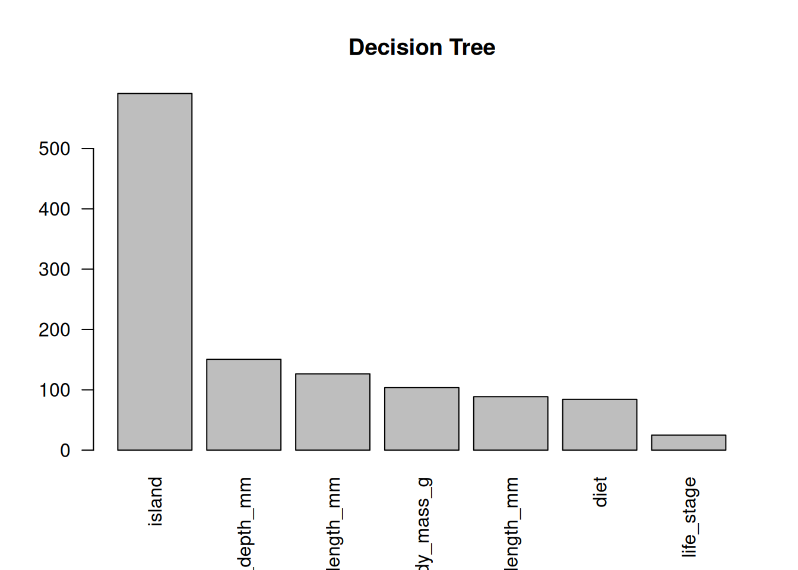
- Random Forest
varImpPlot(model_rf, main = "Random Forest")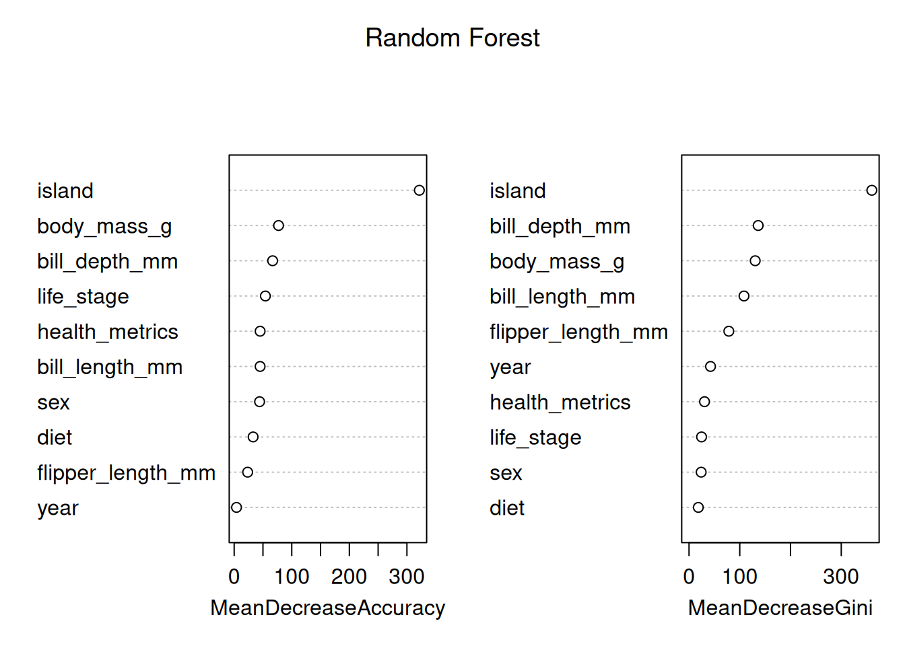
- XGBoost
imp <- xgb.importance(feature_names = colnames(X), model = model_xg)
xgb.plot.importance(imp[1:10], main = "XGBBoost")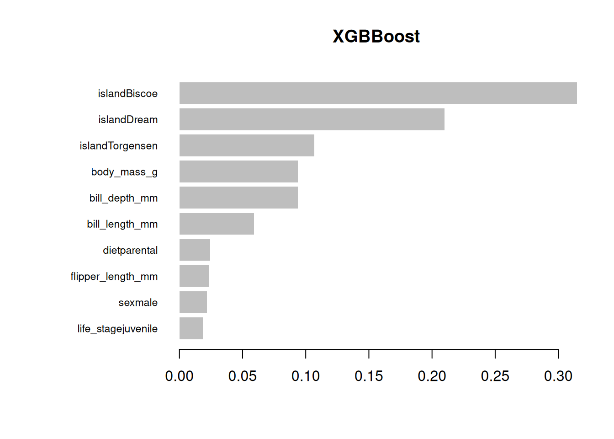
The decision tree figure
rpart.plot(model_dt)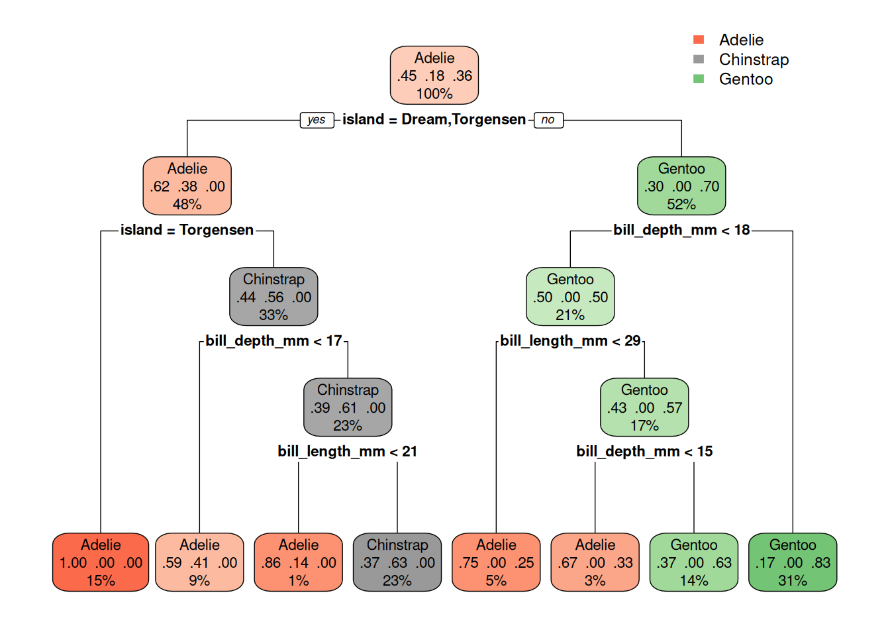
The decision tree plot shows that the model appropriately classified Gentoo, but struggled to distinguish Chinstrap from Adelie. For example, Chinstrap penguins are not found on Torgensen island.
Prediction
Decision Tree
pred_dt <- predict(model_dt, test, type = "class")Naive Bayes
pred_nb <- predict(model_bayes, test)Random Forest
pred_rf <- predict(model_rf, test)Bagging
pred_bg <- predict(model_bg, test)XGBoost
X_test <- model.matrix(species ~ . - 1, data = test)
y_test <- as.numeric(test$species) - 1
# returns a flatter vector of probabilities
pred_prob_xg <- predict(model_xg, X_test)
# comvert it into a matrix form
pred_prob_xg01 <- matrix(pred_prob_xg, ncol = length(unique(y)),
byrow = TRUE)
# convert into labels in a vector.
pred_class_xg <- max.col(pred_prob_xg01) - 1 Logistic models
x_test <- model.matrix(species ~ ., data = test_svmknn)
y_test <- as.numeric(test$species)
pred_class_lg <- predict(model_lg, x_test, type = "class")
pred_prob_lg <- predict(model_lg, x_test, type = "response")kNN
pred_knn <- model_knnSVM
pred_svm <- predict(model_svm, test_svmknn)KSVM
pred_ksvm <- predict(model_ksvm, test_svmknn)Results: Evaluation
Confusion matrix
Create a list of confusion matrices for each model.
class_names <- levels(train$species)
true_label_xg <- class_names[y_test]
pred_label_xg <- class_names[pred_class_xg + 1]
pred_models <- list(pred_dt, pred_nb, pred_rf, pred_bg,
pred_label_xg, pred_class_lg, pred_knn,
pred_svm, pred_ksvm)
model_names <- c("Decision Tree", "Naive Bayes", "Random Forest",
"Bagging", "XGBoost", "Logistic",
"kNN", "SVM", "KSVM")
table_list <- map(pred_models, \(pred){
actual_class <- test$species
if (identical(pred, pred_class_lg) |
identical(pred, pred_knn) |
identical(pred, pred_svm) |
identical(pred, pred_ksvm)) {
actual_class <- test_svmknn$species
}
if(identical(pred, pred_label_xg)){
actual_class <- true_label_xg
}
tb <- table(pred, actual_class)
df_tb <- tb %>% as.data.frame()
colnames(df_tb) <- c("predicted", "actual", "freq")
df_tb
})
names(table_list) <- model_namesCreate a list of confusion matrix plots for each model.
plot_list <- map(model_names, \(ml){
df10 <- table_list[[ml]]
df10 %>%
ggplot(aes(x = actual, y = predicted, fill = freq)) +
geom_tile(color = "white") +
geom_text(aes(label = freq), size = 5) +
scale_fill_gradient(low = "white", high = "steelblue") +
scale_y_discrete(limits = rev) + # reverse y-axis
scale_x_discrete(position = "top") + # move x-axis to top
labs(x = ml, y = "Predicted") +
theme_minimal(base_size = 14) +
theme(legend.position="none")
})Use do.call() to call a function and pass its arguments as a list for creating confusion matrix plots.
do.call(grid.arrange, c(plot_list, ncol = 3))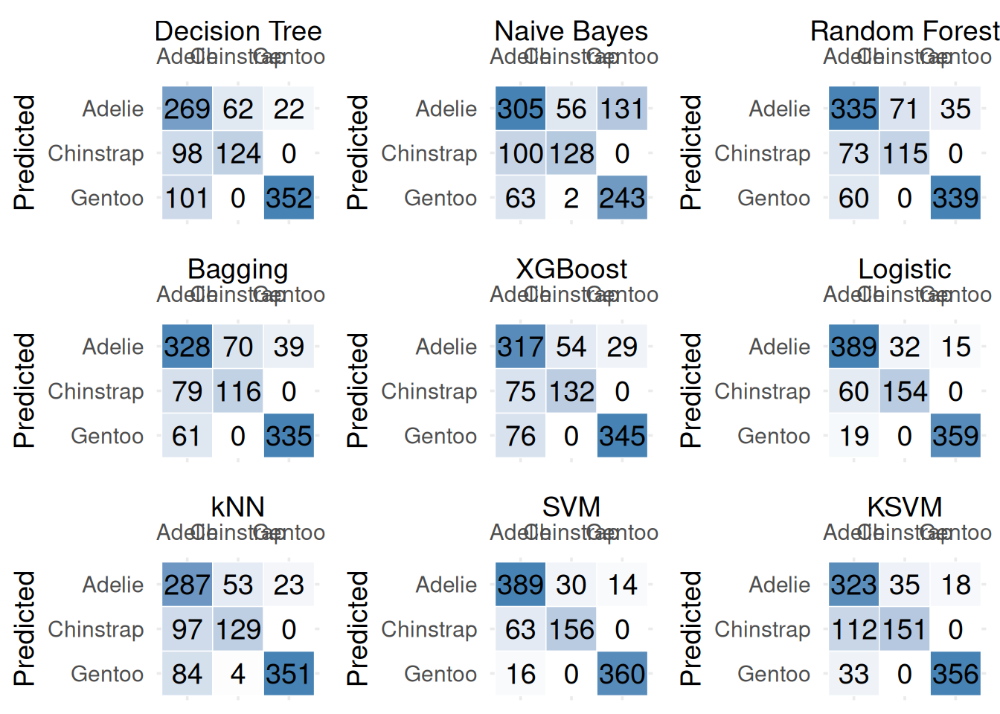
The figures show that the Logistic Regression model and SVM models perform better than the other models.
Accuracy, CE and F1
Accuracy
Accuracy = (Number of corect predictions) / (Total number of predictions)
Easy to understand, but misleading with imbalanced classes.
F1 Score
F1 = 2 x (Precision x Recall) / (Presicion + Recall)
Precision = (Correct positive predictions) / (Total predicted positives)
Recall: (Correct positive predictions) / (Total actural positives)
Useful when classes are imbalanced
Classification Error (CE)
- CE = 1 - Accuracy
# Function to select correct actual labels per model
get_actual <- function(pred_vec) {
if (identical(pred_vec, pred_class_lg) |
identical(pred_vec, pred_knn) |
identical(pred_vec, pred_svm) |
identical(pred_vec, pred_ksvm)) {
return(test_svmknn$species)
} else if (identical(pred_vec, pred_label_xg)) {
return(true_label_xg)
} else {
return(test$species)
}
}
# Compute results programmatically
results_df <- imap_dfr(pred_models, \(pred, i) {
actual_class <- get_actual(pred)
# Ensure factors have same levels
pred_vec <- factor(pred, levels = levels(actual_class))
ac <- Accuracy(pred, actual_class) %>% round(3)
f1 <- F1_Score(pred, actual_class) %>% round(3)
ce <- round(1 - ac, 3)
tibble(
Model = model_names[i],
Accuracy = ac,
F1 = f1,
CE = ce
)
})results_df %>% arrange(-Accuracy)# A tibble: 9 × 4
Model Accuracy F1 CE
<chr> <dbl> <dbl> <dbl>
1 SVM 0.88 0.863 0.12
2 Logistic 0.875 0.857 0.125
3 KSVM 0.812 0.774 0.188
4 XGBoost 0.772 0.73 0.228
5 Random Forest 0.768 0.737 0.232
6 kNN 0.768 0.733 0.232
7 Bagging 0.758 0.725 0.242
8 Decision Tree 0.725 0.655 0.275
9 Naive Bayes 0.658 0.635 0.342Based on Accuracy, F1, and CE, SVM is the best-performing model, followed by Logistic Regression.
ROC and AUC
The Receiver Operating Characteristic (ROC) curve illustrates the performance of a binary classifier across all possible threshold values. The curve depicts the trade-off between sensitivity (True Positive Rate, TPR) and 1 − specificity (False Positive Rate, FPR).
For multiclass classification, we applied a one-vs-rest (OvR) approach, creating a binary dataset for each penguin species. For example, in the Adelie penguins classifier, all Adelie penguins are labeled 1, while the other penguins are labeled 0. This allows us to compute an ROC curve and corresponding AUC value for each species.
The Area Under the Curve (AUC) quantifies the area under the ROC curve, summarizing the model’s overall ability to discriminate between classes.
ROC using pROC library
# p_load(pROC)# prob_dt <- predict(model_dt, test, type = "prob")#model_svm <- svm(species ~ ., data = train_svmknn, kernel="linear",
# probability = TRUE)
#pred_svm <- predict(model_svm, test_svmknn, probability = TRUE)
#prob_svm <- attr(pred_svm, "probabilities")
#
#mc_roc <- multiclass.roc(test$species, prob_svm)
#ONE-vs-REST
Probability
# decision tree
prob_dt <- predict(model_dt, test, type = "prob")
# bayes
prob_bayes <- predict(model_bayes, test, type = "raw")
# Random forest
prob_rf <- predict(model_rf, test, type = "prob")
# Bagging
prob_bg <- predict(model_bg, test, type = "prob")
# XGBoost
pred_prob_xg <- predict(model_xg, X_test)
num_class <- length(levels(train$species))
prob_xg <- matrix(pred_prob_xg, ncol = num_class, byrow = TRUE)
colnames(prob_xg) <- levels(train$species)
# Logistic model
prob_list <- predict(model_lg, x_test, type = "response")
prob_lg <- prob_list[, , 1]
colnames(prob_lg) <- levels(train_svmknn$species)
# knn
model_knn3 <- knn3(species ~ ., data = train)
prob_knn <- predict(model_knn3, test, type = "prob")
train_svmknn$species <- as.factor(train_svmknn$species)
# svm
model_svm <- svm(species ~ ., data = train_svmknn, kernel="linear",
probability = TRUE)
pred_svm <- predict(model_svm, test_svmknn, probability = TRUE)
prob_svm <- attr(pred_svm, "probabilities")
# ksvm
model_ksvm <- ksvm(species ~ ., data = train_svmknn,
kernel = "rbfdot", prob.model = TRUE)
prob_ksvm <- predict(model_ksvm, test_svmknn, type = "probabilities")ROC
Calculate the ROC curves for all models separately for each penguin species.
models <- list(
dt = prob_dt,
bayes = prob_bayes,
knn = prob_knn,
svm = prob_svm,
ksvm = prob_ksvm,
random = prob_rf,
bagging = prob_bg,
xgb = prob_xg,
logistic = prob_lg
)
truth <- test_svmknn$species %>% as.factor() # must be factor
classes <- levels(test_svmknn$species %>% as.factor())
roc_list <- list()
for (m_name in names(models)){
prob_df <- models[[m_name]] %>% as.data.frame()
for (cls in classes){
binary_truth <- ifelse(truth == cls, 1, 0)
roc_obj <- roc(binary_truth, prob_df[[cls]], quiet = TRUE)
roc_list[[paste(m_name, cls, sep = "_")]] <- roc_obj
}
}Convert the roc_list into data frames and visualize them as plots.
roc_df <- map_df(names(roc_list), \(nm) {
roc_obj <- roc_list[[nm]]
df <- data.frame(
specificity = roc_obj$specificities,
sensitivity = roc_obj$sensitivities,
name = nm
)
df
})
roc_df <- roc_df %>%
separate(name, into = c("Model", "Class"), sep = "_")
ggplot(roc_df, aes(x = 1 - specificity, y = sensitivity,
color = Model)) +
geom_line(size = 1) +
geom_abline(slope = 1, intercept = 0, linetype = "dashed",
color = "gray") +
facet_wrap(~ Class) +
theme_minimal(base_size = 14) +
labs(
title = "ROC Curves by Model and Class",
x = "False Positive Rate",
y = "True Positive Rate"
)Warning: Using `size` aesthetic for lines was deprecated in ggplot2 3.4.0.
ℹ Please use `linewidth` instead.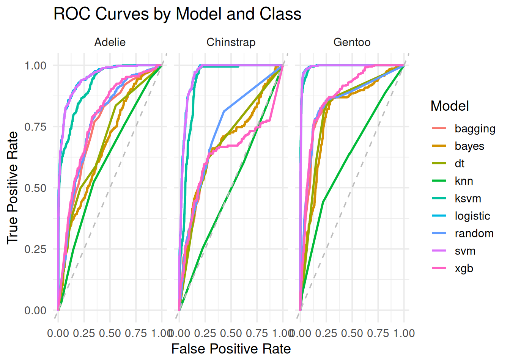
Apparently, Logistic Regression and SVM performs better across all penguin species.
AUC
Extract the AUC values for each model from roc_list and compile them into a data frame.
auc_values <- map_dbl(roc_list, \(x)x$auc) %>% round(3)
auc_df <- data.frame(models = auc_values %>% names,
AUC = auc_values %>% as.numeric())Visualize the AUC values for all models.
# Calculate average AUC values by models
auc_df <- auc_df %>%
mutate(label = auc_df$models) %>%
separate(models, into = c("model", "class"), sep = "_") %>%
group_by(model) %>%
mutate(mean_AUC = mean(AUC)) %>%
ungroup()
# Order the MODEL factor by mean_AUC (this controls legend order)
auc_df$model <- factor(auc_df$model, levels = auc_df %>%
distinct(model, mean_AUC) %>%
arrange(-mean_AUC) %>%
pull(model))
# Order the bar labels (x-axis)
auc_df <- auc_df %>%
arrange(mean_AUC, AUC, model) %>%
mutate(label = factor(label, levels = label))
# Plot
ggplot(auc_df, aes(x = label, y = AUC, fill = model)) +
geom_bar(stat = "identity") +
coord_flip() +
theme(axis.title.y = element_blank())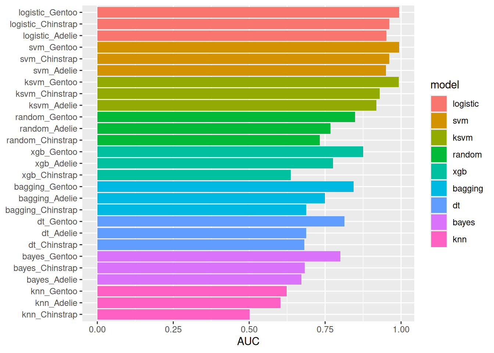
This figure also shows that Logistic Regression and SVM models outperform the other models.
Conclusion
Predicting species from habitat, morphological traits, and other features was possible with high accuracy. The Logistic Regression and SVM models achieved accuracies greater than 0.87, with average AUC values for each species exceeding 0.96. In contrast, other models, including tree-based, distance-based and probalistic approaches, were less effective for these predictions.
Even so, compared to the other species, the best-performing models still struggled to distinguish Adelie penguins from the other two species. Considering the variable importance indicated by the tree-based models, this difficulty may be related to their habitats: while Chinstrap and Gentoo penguins inhabit specific islands, Adelie are found on all three islands.